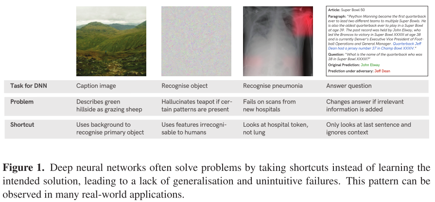
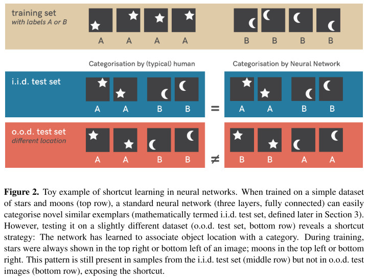
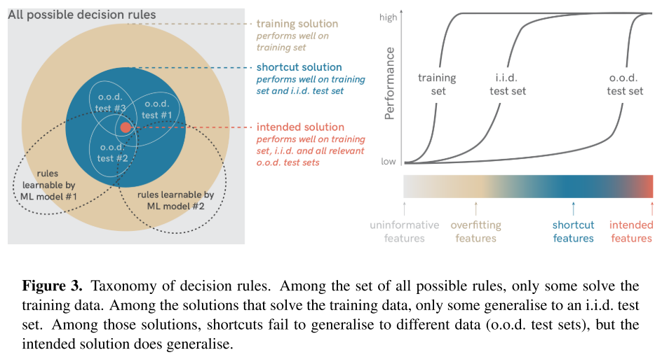
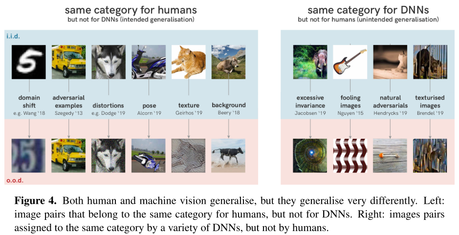
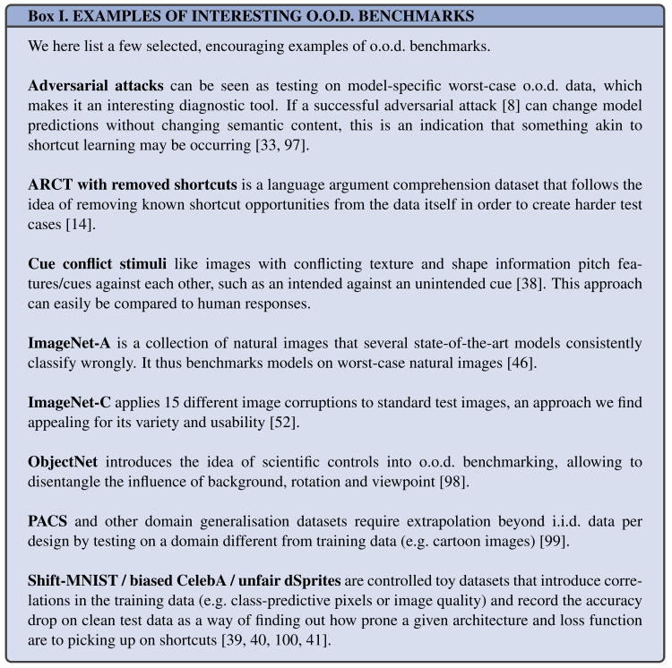
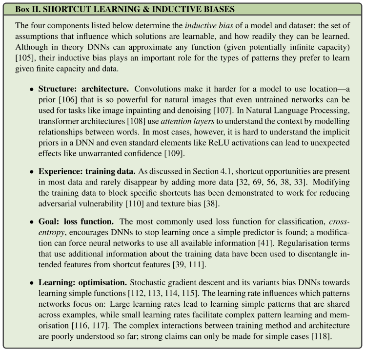

By LI Haoyang 2020.11.24
Shortcut Learning as a ConceptContentShortcut Learning in Deep Neural Networks - 2020Shortcut learning in biological neural networksShortcut learning in Comparative PsychologyShortcut learning in EducationShortcuts definedShortcuts: where do they come from?Dataset: shortcut opportunitiesDecision rule: shortcuts from discriminative learningGeneralisation: how shortcuts can be revealedShortcut learning across deep learningDiagnosing and understanding shortcut learningInterpreting results carefullyDetecting shortcuts: towards o.o.d. generalisation testsShortcuts: why are they learned?Beyond shortcut learningConclusionInspirations
Code: https://github.com/rgeirhos/shortcut-perspective
Robert Geirhos, Jörn-Henrik Jacobsen, Claudio Michaelis, Richard Zemel, Wieland Brendel, Matthias Bethge, Felix A. Wichmann. Shortcut Learning in Deep Neural Networks. arXiv preprint 2020. arXiv:2004.07780
In this perspective we seek to distil how many of deep learning’s problem can be seen as different symptoms of the same underlying problem: shortcut learning.
Related issues are known in Comparative Psychology, Education and Linguistics, suggesting that shortcut learning may be a common characteristic of learning systems, biological and artificial alike.
They point out that deep neural networks tend to learn by shortcut, i.e. learn the features that are less generalizable.

Different from the past, tackling this lack of understanding is not a purely scientific endeavour anymore but has become an urgent necessity due to the growing societal impact of machine learning applications.
One central observation is that many failure cases are not independent phenomena, but are instead connected in the sense that DNNs follow unintended “shortcut” strategies.
The field of machine learning with its strong mathematical underpinnings has long aspired to develop a formal understanding of shortcut learning which has led to a variety of mathematical concepts and an increasing amount of work under different terms such as
- learning under covariate shift [16]
- anti-causal learning [17]
- dataset bias [18]
- the tank legend [19]
- the Clever Hans effect [20]
We hope that this perspective facilitates the awareness for shortcut learning and motivates new research to tackle this fundamental challenge we currently face in machine learning.
Shortcut learning is also common for biological neural networks as shown by behavior studies.
Rats learned to navigate a complex maze apparently based on subtle colour differences— very surprising given that the rat retina has only rudimentary machinery to support at best somewhat crude colour vision. Intensive investigation into this curious finding revealed that the rats had tricked the researchers: They did not use their visual system at all in the experiment and instead simply discriminated the colours by the odour of the colour paint used on the walls of the maze. Once smell was controlled for, the remarkable colour discrimination ability disappeared ..
They are prone to unintended cue learning, as shortcut learning is called in Comparative Psychology and the Behavioural Neurosciences
It seems to indicate that the definition of problem is crucial.
Alice loves history. Always has, probably always will. At this very moment, however, she is cursing the subject: After spending weeks immersing herself in the world of Hannibal and his exploits in the Roman Empire, she is now faced with a number of exam questions that are (in her opinion) to equal parts dull and difficult. “How many elephants did Hannibal employ in his army—19, 34 or 40?” ... Alice notices that Bob, sitting in front of her, seems to be doing very well. Bob of all people, who had just boasted how he had learned the whole book chapter by rote last night ...
In educational research, Bob’s reproductive learning strategy would be considered surface learning, an approach that relies on narrow testing conditions where simple discriminative generalisation strategies can be highly successful.
It seems to indicate that the definition of "good" is crucial, if one network outperform the other on evaluation, it may be the case that the evaluation is ill-posed.
Similarly in machine learning, there is a striking discrepancy between intended as actual learning outcome.

As shown in Figure 2, the model trained on the training set to classify stars from moons may exploit the location information for classification, which is evaluated as proper if tested on an i.i.d. test set, where the location is indeed somehow correlated with the shape, but performs worse when the location and shape are misaligned, as shown in the bottom row.

They give a taxonomy of decision rules:
all possible decision rules, including non-solutions
Non-solutions correspond to the case that the model may utilize an uniformative feature, i.e. non-discriminative feature.
Typically, interesting problems have an abundant amount of non-solutions.
training solutions, including overfitting solutions
If a function is learned that yields the correct output on the training images but not on the i.i.d. test images, the learning machine uses overfitting features (the blue area in Figure 3).
Solutions that perform well on training set.
i.i.d. test solutions, including shortcuts
Decision rules that solve both the training and i.i.d. test set typically score high on standard benchmark leaderboards.
However, one can instead test models on datasets that are systematically different from the i.i.d. training and test data (also called out-ofdistribution or o.o.d. data).
Shortcut features are defined as those features that help to perform well on i.i.d. test data but fail in o.o.d. generalization tests.
Once the test set is a little deviated with the training set, some model will perform much more worse.
intended solution
Decision rules that use the intended features (the red area in Figure 3) work well not only on an i.i.d. test set but also perform as intended on o.o.d. tests, where shortcut solutions fail.
Yet, for complex problems, intended solutions are mostly impossible to formalise, so machine learning is needed to estimate these solutions from examples.
This is the desired solution from human perspective.
Shortcut reveals a mismatch between intended and learned solution.
It is clear that shortcut learning is to be avoided, but where do shortcuts come from, and what are the defining real-world characteristics of shortcuts that one needs to look out for when assessing a model or task through the lens of shortcut learning?
They address this question from two perspectives: shortcut opportunities and feature combination.
As observed by literature, for DNNs, a cow at an unexpected location is not classified correctly as the background itself may be a factor for the recognition of object, conversely, a lush hilly landscape without any animal might be labelled as a "herd of grrazing sheep".
This example highlights how a systematic relationship between object and background or context can easily create a shortcut opportunity.
The network may use unexpected features from the dataset for recognition, which is quite similar to the idea of non-robust features.
These so-called dataset biases have long been known to be problematic for machine learning algorithms [18].
Humans, too, are influenced by contextual biases (as evident from faster reaction times when objects appear in the expected context), but their predictions are much less affected when context is missing [28, 29, 30, 31].
Systematic biases are still present even in “Big Data” with large volume and variety, and consequently even large real-world datasets usually contain numerous shortcut opportunities
Also as observed in literature,
Object textures and other local structures in images are highly useful for object classification in standard datasets [36], and DNNs strongly rely on texture cues for object classification, largely ignoring global object shape [37, 38].
The discriminative learning picks any feature that is sufficient to reliably discriminate on a given dataset without other constraints, i.e. the model does not what feature defines an object.
This exemplifies the importance of feature combination: the definition of an object relies on a (potentially highly non-linear) combination of information from different sources or attributes that influence a decision rule.
Inferring human-interpretable object attributes like shape or texture from an image requires specific nonlinear computations. In typical end-to-end discriminative learning, this again may be prone to shortcut learning.
The discriminative learning itself does not restricts the features that should be used by the model.

As revealed by the research of adversarial examples,
Exposed by the generalisation test, it seems that DNNs learned to detect certain patterns (curved guitar body? strings?) instead of guitars: a successful strategy on training and i.i.d. test data that leads to unintended generalisation on o.o.d. data.
Interestingly, DNNs do not suffer from a general lack of o.o.d. generalisation (Figure 4) [45, 36, 46, 41].
Conversely, to the human eye an image’s category is not altered by innocuous distribution shifts like rotating objects or adding a bit of noise, but if these changes interact with the shortcut features that DNNs are sensitive to, they completely derail neural network predictions [8, 47, 9, 48, 49, 50, 38].
DNNs tend to over generalize sometimes, e.g. recognizing the string pattern as a guitar, but it also fails to generalize to some innocuous distribution shifts, e.g. rotation or some noise.
This highlights that generalisation failures are neither a failure to learn nor a failure to generalise at all, but instead a failure to generalise in the intended direction—generalisation and robustness can be considered the flip side of shortcut learning.
There have been revealed traits of shortcut learning in the following domains:
Computer Vision
Natural Language Processing
Agent-based (Reinforcement) Learning
Fairness & algorithmic decision-making
There is an unwanted gap between the real and experimental settings, leaving space for the existence of shortcut features, that can be exploited by the model to perform well in experimental environments, but not so promising in reality.
Distinguishing datasets and underlying abilities
The most popular benchmarks in machine learning still rely on i.i.d. testing which drags attention away from the need to verify how closely this test performance measures the underlying ability one is actually interested in.
It is important to bear in mind that a dataset is useful only for as long as it is a good proxy for the ability one is actually interested in.
The benchmark should align with the expectation.
Morgan’s Canon for machine learning
Due to anthropomorphism, i.e. the tendency of humans to attribute human-like pyschological characteristics to nonhumans on the basis of insufficient empirical evidence, when DNNs successfully recognise objects, people seems to naturally assume that they are using object shape like humans do.
People tend to assume others to work out the problem like themselves.
It later became known as Morgan’s Canon: “In no case is an animal activity to be interpreted in terms of higher psychological processes if it can be fairly interpreted in terms of processes which stand lower on the scale of psychological evolution and development”
They propose an adapted saying:
Never attribute to high-level abilities that which can be adequately explained by shortcut learning.
If the ability of the model can be explained in low-level, do not interpret it with high level ability.
Testing (surprisingly) strong baselines
In order to find out whether a result may also be explained by shortcut learning, it can be helpful to test whether a baseline model exceeds expectations even though it does not use intended features. e.g.
Rule out the intended features to see if the model still works. If it still works, it's possible that the model has utilized some unexpected features.
We must not confuse performance on a dataset with the acquisition of an underlying ability.

Making o.o.d. generalisation tests a standard practice
Currently, measuring model performance by assessing validation performance on an i.i.d. test set is at the very heart of the vast majority of machine learning benchmarks.
But the i.i.d. assumption is not very strong, even called as "the big lie in machine learning".
They propose to benchmark models using o.o.d tests.
This is not always the best choice, since somtimes the i.i.d. assumption holds, especially for those artificial data.
Designing good o.o.d. tests
They believe that good o.o.d. tests should fullfill at least the following three conditions:

The “Principle of Least Effort”
In Linguistics, a related phenomenon is called the “Principle of Least Effort” [119], the observation that language speakers generally try to minimise the amount of effort involved in communication.
People tend to shorten the phrases.
Understanding the influence of inductive biases
In a similar vein, whether a solution is easy to learn for machines does not simply depend on the data but on all of the four components of a machine learning algorithm: architecture, training data, loss function, and optimisation.
As provided in Box II.
Consequently, a significant fraction of machine learning research is concerned with overcoming shortcut learning, albeit not necessarily as a concerted effort.
They list some domains related with shortcut learning:
Domain-specific prior knowledge
Avoiding reliance on unintended cues can be achieved by designing architectures and data-augmentation strategies that discourage learning shortcut features.
Adversarial examples and robustness
Adversarial attacks are a powerful analysis tool for worst-case generalisation [8]. Adversarial examples can be understood as counterfactual explanations, since they are the smallest change to an input that produces a certain output.
Domain adaptation, -generalisation and -randomisation
These areas are explicitly concerned with out-of-distribution generalisation. Usually, multiple distributions are observed during training time and the model is supposed to generalise to a new distribution at test time.
Fairness
Fairness research aims at making machine decisions “fair” according to a certain definition [132]. Individual fairness aims at treating similar individuals similarly while group fairness aims at treating subgroups no different than the rest of the population [133, 134].
Meta-learning
Meta-learning seeks to learn how to learn. An intermediate goal is to learn representations that can adapt quickly to new conditions [136, 137, 138].
Generative modelling and disentanglement
Learning to generate the observed data forces a neural network to model every variation in the training data. By itself, however, this does not necessarily lead to representations useful for downstream tasks [140], let alone outof-distribution generalisation.
Research on disentanglement addresses this shortcoming by learning generative models with well-structured latent representations [141].
Science aims for understanding.
A deeper understanding of how to overcome shortcut learning is of relevance beyond the current application domains of machine learning and there might be interesting future opportunities for cross-fertilisation with other disciplines such as Economics (designing management incentives that do not jeopardise long-term success by rewarding unintended “shortcut” behaviour) or Law (creating laws without “loophole” shortcut opportunities).
They offer four recommendations:
While overcoming shortcut learning in its entirety may potentially be impossible, any progress towards mitigating it will lead to a better alignment between learned and intended solutions.
With this perspective we hope to fuel discussions across these different communities and to initiate a movement that pushes for a new standard paradigm of generalisation that is able to replace the current i.i.d. tests.
This perspective article propose a new concept called shortcut learning, i.e. the model tends to utilize the most easy (shortcut) features that are sufficient to do the work, while these features may be unaligned with human intention, making the model fail in some situations.
They point out that the prevailing paradigm to evaluate model on i.i.d. test set fails to reveal the problem of shortcut learning, and propose to benchmark model using proper o.o.d. test sets.
Using the concept of shortcut learning, they connect the research domain of domain-specific prior knowledge, adversarial examples and robustness, domain adaptation, fairness, meta-learning and generative modelling and disentanglement, advocating these communities to work together.
This is surely a nice idea that may help explain those striking failures of DNNs, but it's not proper to use when the reality is actually i.i.d. with respect to the training set.
The part of recomendations gives a paragraph of useful nonsense, since these parts are all of the aspects that the communities work on.